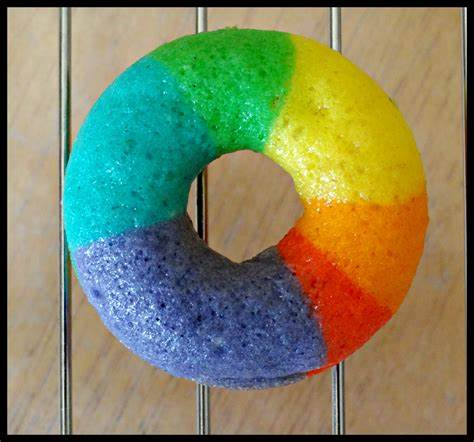

RAINBOW DONUT
- Add warm milk and water to a mixing bowl with dry yeast. Let sit for 5 minutes.
If yeast bubbles, you are ready to go. If it doesn't, you need new yeast!
- In stand mixer, attach dough hook. On low, add butter, egg yolks, sugar, salt, and cinnamon to liquid. Finally, add flour in 3 batches.
Mix on low until dough forms a tight ball. If the dough is sticking to the side of the bowl, add more flour by the tablespoon. NOTE: You don't need a mixer to make these,
you can also mix the ingredients in a large bowl with a wooden spoon and then knead lightly on floured surface for a few minutes until dough is soft, but not sticky.
- In stand mixer, attach dough hook. On low, add butter, egg yolks, sugar, salt, and cinnamon to liquid. Finally, add flour in 3 batches. Mix on low until dough forms a tight ball.
If the dough is sticking to the side of the bowl, add more flour by the tablespoon. NOTE: You don't need a mixer to make these,
you can also mix the ingredients in a large bowl with a wooden spoon and then knead lightly on floured surface for a few minutes until dough is soft, but not sticky.
- In stand mixer, attach dough hook. On low, add butter, egg yolks, sugar, salt, and cinnamon to liquid. Finally, add flour in 3 batches. Mix on low until dough forms a tight ball.
If the dough is sticking to the side of the bowl, add more flour by the tablespoon. NOTE: You don't need a mixer
to make these, you can also mix the ingredients in a large bowl with a wooden spoon and then knead lightly on floured surface for a few minutes until dough is soft, but not sticky.
- Meanwhile, pour neutral oil in a heavy pan (cast iron or dutch oven) until the oil comes about 1.5-2 inches up the pan.
That's all you need to fry these since the donuts float. Heat the oil until it reaches 350°F. Use a candy/deep-fry thermometer to ensure safe temperatures.
- Once oil is hot, add donuts and cook for 60-90 seconds on each side until lightly browned. You will probably have to work in batches.
- Remove donuts once they are done on each side and let cool on drying rack.
- Apply glaze to the donuts!
- For glaze, melt butter in a bowl and whisk in corn syrup and milk until it's well dissolved. Add vanilla extract. Sift in powdered sugar until glaze is thick but still liquid.
- If you're coloring your glazes, add a few drops of food coloring until you get the desired colors. NOTE: If you let the glaze sit for a few minutes, it will start to harden.
o bring it back to life, jus stir a few drops of warm water.